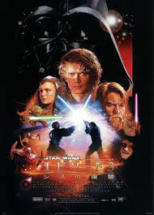

エピソード4新たなる希望。舞台は銀河制服を試みる銀河帝国軍と人々の自由の為に戦う反乱軍との闘い。田舎の青年ルーク・スカイウォーカーは亡き父親に偉大なジェダイの戦士を持っている。ある日村のはずれに住むオビ・ワン＝ケノービと出会いジェダイについてそしてフォースの訓練を受ける。惑星ごと破壊しうる兵器デススターの破壊のためルークは反乱軍とともに戦いに参加する。
エピソード５帝国の逆襲。宿敵ダース・ベイダーの正体はなんと実の父親だったのだ。また戦友のハン・ソロもランドカルリジアンの裏切りで悪党ジャバザハットに捕らえられ反乱軍は絶体絶命。
エピソード6ジェダイの帰還。帝国軍による第２のデススターが建設されるなかルークはハンソロの救出に向かう。
実の父親であるダース・ベイダーとの決着をつけるべくデススターに向かうルーク。ルークがピンチにその瞬間ダース・ベイダーは善の心を取り戻しジェダイ時の心で皇帝を倒す。タイトルはルークの戦線復帰とダース・ベイダーがジェダイに戻るという二つの意味があるのだ。
エピソード１ファントムメナス
ダース・ベイダーがまだ幼くアナキン・スカイウォーカーという少年だった時の話。奴隷として生きてきたアナキンがジェダイマスターのクワイガン＝ジンにお弟子入りをする。ジェダイになるためのアナキンの修行の旅が始まるのである。
エピソード３シスの復讐
アナキンは妻のパドメを死から避けるべくついにフォースの暗黒面を学ぶことに。上昇志向の高いアナキンに対してジェダイ評議会は彼の出世を慎重に考える。アナキンはジェダイ評議会に対して不信感を覚え、ついにシスの手先となる。オビワンとダース・ベイダーの師弟対決やいかに・・・
